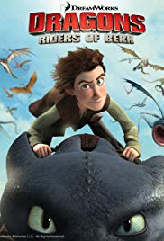
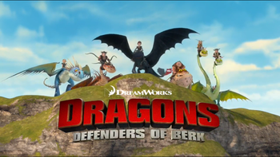
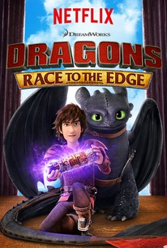

This page containes spoilers about How to Train Your Dragon.
TV Show Seasons
This is a list of the episodes of each season.
DreamWorks Dragons Riders of Berk
DreamWorks Dragons Riders of Berk takes place right after the first movie.
List of Episodes
- How to Start a Dragon Academy
- Viking for Hire
- Animal House
- The Terrible Twos
- In Dragons We Trust
- Alvin and the Outcasts
- How To Pick Your Dragon
- Portrait of Hiccup as a Buff Man
- Dragon Flower
- Heather Report Part 1
- Heather Report Part 2
- Thawfest
- When Lightning Strikes
- Whar Flies Beneath
- Twinsanity
- Defiant One
- Breakneck Bog
- Gem of a Different Color
- We Are Family Part 1
- We Are Family Part 2

DreamWorks Dragons Defenders of Berk
DreamWorks Dragons Defenders of Berk takes place right after Riders of Berk.
List of Episodes
- Live and Let Fly
- The Iron Gronckle
- The Night and the Fury
- Tunnel Vision
- Race to Fireworm Island
- Fright of Passage
- Worst in Show
- Appetite for Destruction
- Zippleback Down
- A View to a Skrill Part 1
- A View to a Skrill Part 2
- The Flight Stuff
- Free Scauldy
- Frozen
- A Tale of Two Dragons
- The Eel Effect
- Smoke Gets in Your Eyes
- Bing! Bam! Boom!
- Cast Out, Part I
- Cast Out, Part II

Dragons: Race to the Edge Season 1
Dragons: Race to the Edge Season 1 takes place 3 years after Defenders of Berk.
List of Episodes
- Eye of the Beholder, Part 1
- Eye of the Beholder, Part 2
- Imperfect Harmony
- When Darkness Falls
- Big Man on Berk
- Gone Gustav Gone
- Reign of Fireworms
- Crushing It
- Quake, Rattle and Roll
- Have Dragon Will Travel, Part 1
- Have Dragon Will Travel, Part 2
- The Next Big Sting
- Total Nightmare

Dragons: Race to the Edge Season 2
Dragons: Race to the Edge Season 2 takes place after the first season.
List of Episodes
- Team Astrid
- Night of the Hunters, Part 1
- Night of the Hunters, Part 2
- Bad Moon Rising
- Snotlout Gets the Axe
- The Zippleback Experience
- Snow Way Out
- Edge of Disaster, Part 1
- Edge of Disaster, Part 2
- Shock and Awe
- A Time to Skrill
- Maces and Talons, Part 1
- Maces and Talons, Part 2

Dragons: Race to the Edge Season 3
Dragons: Race to the Edge Season 3 takes place after the second season.
List of Episodes
- Enemy of My Enemy
- Crash Course
- Follow the Leader
- Turn and Burn
- Buffalord Soldier
- A Grim Retreat
- To Heather or Not to Heather
- Stryke Out
- Tone Death
- Between a Rock and a Hard Place
- Family on the Edge
- Last Auction Heroes
- Defenders of the Wing, Part 1
Dragons: Race to the Edge Season 4
Dragons: Race to the Edge Season 4 takes place after the third season.
List of Episodes
- Defenders of the Wing, Part 2
- Gruff Around the Edges
- Midnight Scrum
- Not Lout
- Saving Shattermaster
- Dire Straits
- The Longest Day
- Gold Rush
- Out of the Frying Pan
- Twintuition
- Blindsided
- Shell Shocked, Part 1
- Shell Shocked, Part 2
Dragons: Race to the Edge Season 5
Dragons: Race to the Edge Season 5 takes place after the fourth season.
List of Episodes
- Living on the Edge
- Sandbusted
- Something Rotten on Berserker Island
- Snotlout's Angels
- A Matter of Perspective
- Return of Thor Bonecrusher
- Dawn of Destruction
- The Wings of War, Part 1
- The Wings of War, Part 2
- No Dragon Left Behind
- Snuffnut
- Searching for Oswald...and Chicken
- Sins of the Past
Dragons: Race to the Edge Season 6
Dragons: Race to the Edge Season 6 takes place after the fifth season and before the second movie.
List of Episodes
- In Plain Sight
- No Bark, All Bite
- Chain of Command
- Loyal Order of Ingerman
- A Gruff Separation
- Mi Amore Wing
- Ruff Transition
- Triple Cross
- Family Matters
- Darkest Night
- Guardians of Vanaheim
- King of Dragons, Part 1
- King of Dragons, Part 2